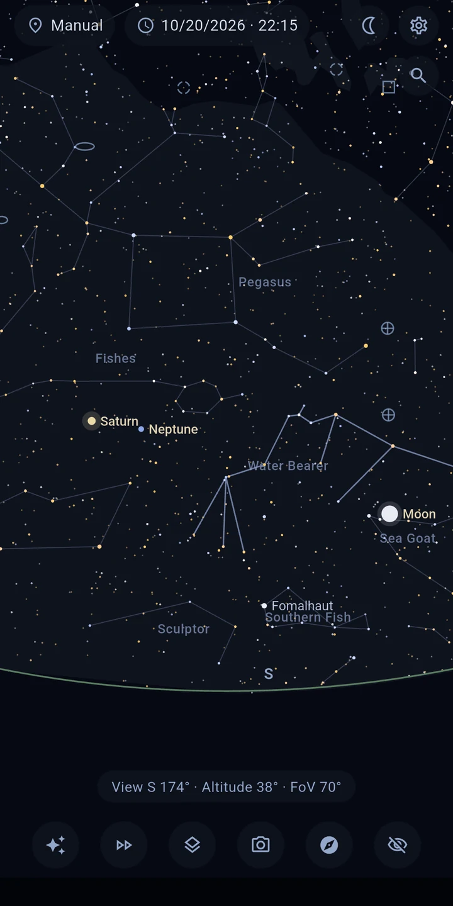
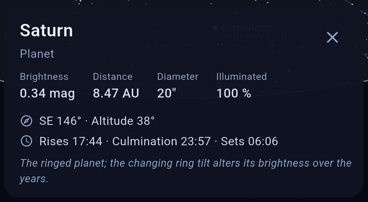
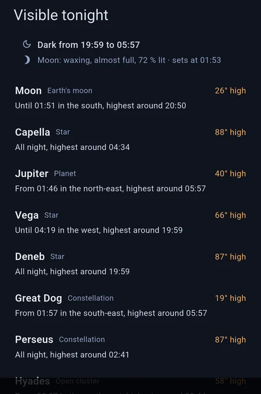
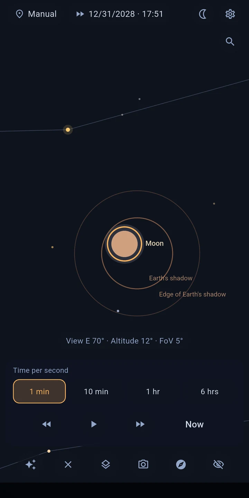

Astira – Star Map
Spot constellations, planets and the Moon — no internet.
Point your phone at the sky — Astira shows you live what you are looking at: stars and constellations, planets, the Moon and distant galaxies. Computed precisely for your location and the moment, entirely without internet.
THE SKY FOLLOWS YOUR MOVEMENT
In live mode the orientation sensor drives the view: pan your device and the map pans with it — smooth, steady, and with magnetic declination correction for your location. Prefer the classic way? Swipe and pinch-zoom across the sky instead.

TAP TO UNDERSTAND
Tap any object to learn more without leaving the view: proper name and catalog designation, distance, brightness, spectral class and temperature, radius and mass for many bright stars — plus rise, culmination and set times for your location.

FIND WHAT YOU ARE LOOKING FOR
Search stars, planets, constellations and deep-sky objects by name or catalogue number — M 31, NGC 224 and Andromeda all lead to the same object. If the target is off screen, an arrow points the way and tells you how far to turn. And when you don't yet know what to look for: "Visible tonight" names the most rewarding objects of the coming night — in plain words, with altitude and observing window. An entry into astronomy without prior knowledge, and on first launch a short tour walks you through the controls.

WHAT YOU WILL SEE
- About 8,900 stars — every star visible to the naked eye (down to magnitude 6.5)
- Sun, Moon (with phase) and all planets, including visibility and twilight status
- All 109 Messier objects plus more bright galaxies, nebulae and star clusters
- Toggleable layers: constellations, Milky Way, solar system, ecliptic, planet paths (±30 days)
- Location via GPS or manual entry, time freely adjustable — preview tomorrow's sky today
TIME LAPSE
Time lapse shows you how the stars move across the sky — forwards and backwards. Watch an object set, run through a whole night, or follow the Moon through its phases.
SOLAR AND LUNAR ECLIPSES
Astira works out which eclipses are visible from where you are — when they begin and how much gets covered. One tap and you can follow it in time lapse.

PRECISION ALIGNMENT
Map slightly off? That happens to every phone compass. Point at a star you know, tap it, hit "Align here" — done. The map matches your sky instead of leaving you guessing.
THE SKY ABOVE YOUR SURROUNDINGS
Switch on the camera view and the star map settles over what is really in front of you: the horizon, trees, rooftops. Instead of matching map and reality in your head, simply point the device where you are searching. The picture is only displayed — never captured, never stored, never transmitted.
MADE FOR OBSERVING
- Pure-red night mode preserves your dark adaptation
- The screen stays on while you are observing
- Realistic star colors (from color index) and magnitude-based sizing
- Adjustable magnitude limit, distances in light-years or parsecs
FULLY OFFLINE — AND PRIVATE
Astira needs no internet: all calculations run on your device. The app has no internet permission, shows no ads and contains no tracking. Your location is only used on-device to compute the sky view — perfect for dark-sky sites far from any city (or signal).
ACCURACY
Positions follow the standard methods of the astronomical literature — planet positions deviate by less than one arcminute from the JPL reference.
DATA SOURCES
Star catalog: HYG database (CC BY-SA) · Deep-sky objects: OpenNGC (CC BY-SA) · Details on the in-app credits screen.
Note: smartphone compass accuracy is typically ±5–10°. With guided calibration and star alignment you will still identify every object reliably.